컨트롤 추가
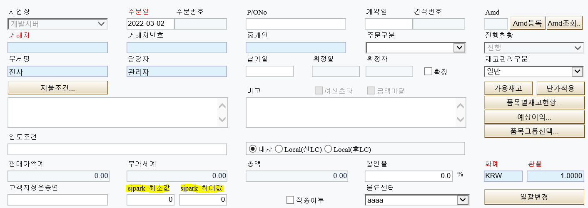
* 컨트롤 영역에 컬럼 추가 (sjpark_최소값 / sjpark_최대값)
1. 58번서버 – aspx파일
디자인 – 컬럼 추가
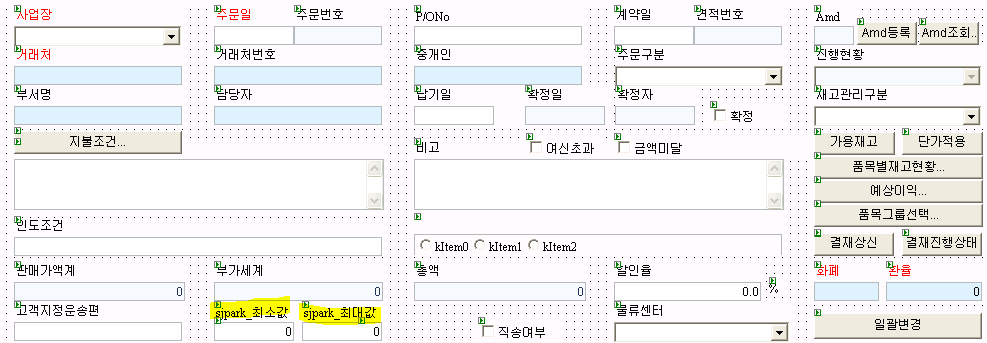
ID = fltSjparkFrom / fltSjparkTo
flt => float (ex. txt => text)
Caption – sjpark_최소값 / sjpark_최대값
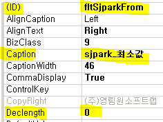
Declength – 0 (소수점 개수)
2. HTML 제대로 들어갔는지 확인
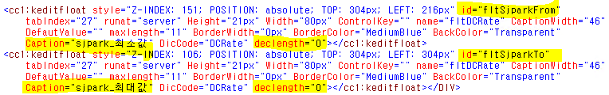
** SP에서 데이터를 가져갈 수 있도록 CS에 추가 **
3. F7 눌러서 CS파일 열기
3-1. protected 부분 - fltSjparkFrom / To 추가
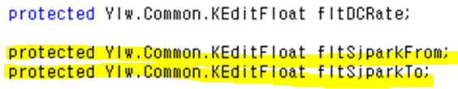
3-2. _page.AddItem 마찬가지로 From / To 추가
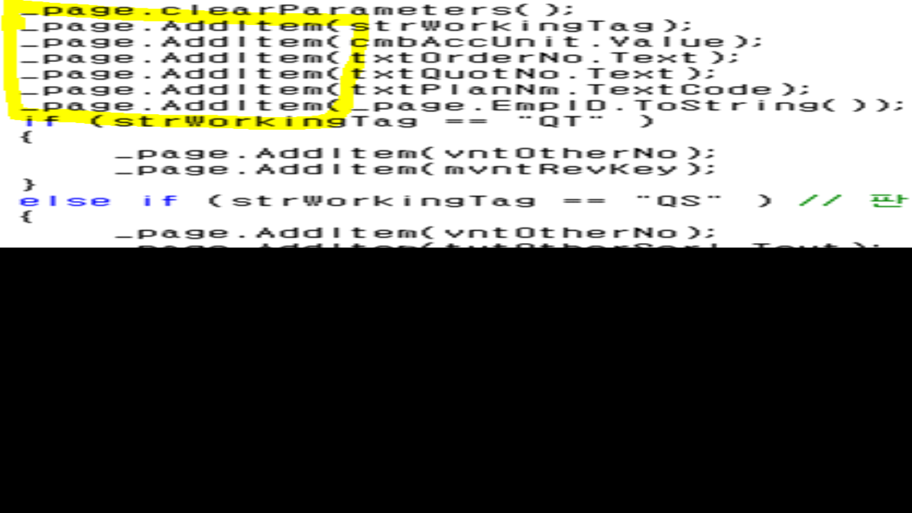
- fltSjparkFrom.Text
Text => 일반적인 텍스트
** Value => 콤보
** TextCode => 코드헬프
Ace에서 ‘코드 도움’과 ‘콤보 박스’는 단순히 보여지는 차이 / 원리는 같다
but. GNI에서는 아예 개념이 다르다
- GNI
* 코드 도움 => Ace와 동일 (파란색으로 보임)
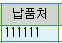
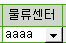
* GNI 콤보 박스
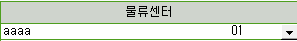
키 값이 숨어있다 (Ace에서는 콤보, 코드 헬프 둘다 필요 없음)
4. CS에서 SP로 주는거 2개 추가했으니, SP에서 받는 것도 2개 추가
(SP에서 추가까지 완료해야 값들을 사용할 수 있다)
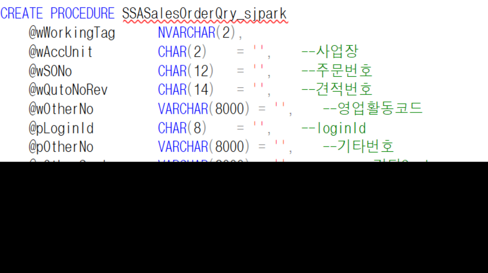
* Ace에서는 CREATE PROCEDURE 부분이 거의 고정되어 있었지만
GNI의 경우 CS부분과 동일해야한다
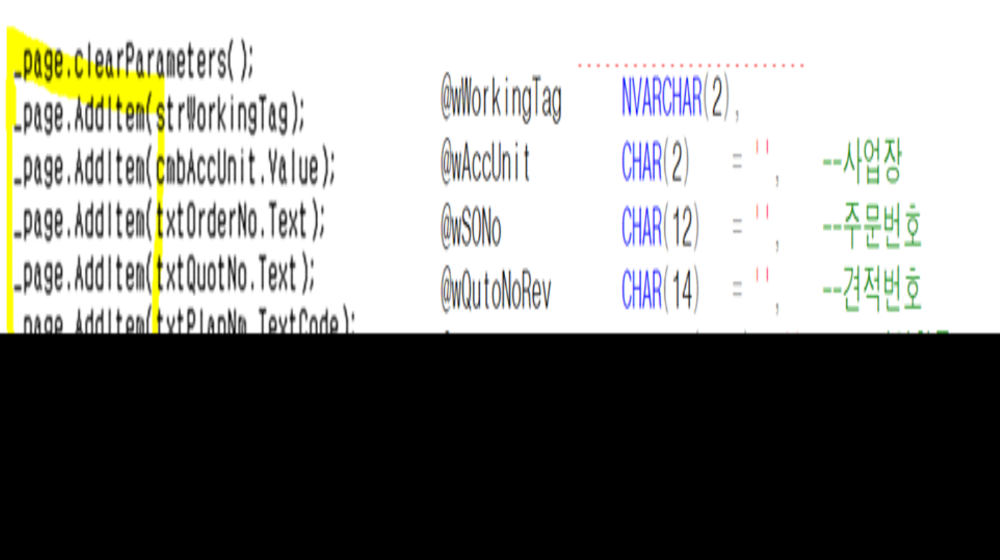
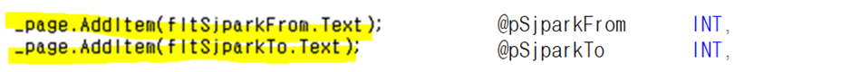
5. END_Proc 부분 수정
5-1. TSASOM (마스터 테이블)에 test_sjpark부분이 없기 때문에
TSAOItem (아이템 테이블)과 join시켜준다
5-2. 최소값은 상관없지만, 최대값이 0일 때 문제 발생
=> BETWEEN이 아니라 To 부분에 별도로 조건 추가
=> 테이블 값이 입력값보다 작을 때
=> ++. 0이거나 조건도 추가
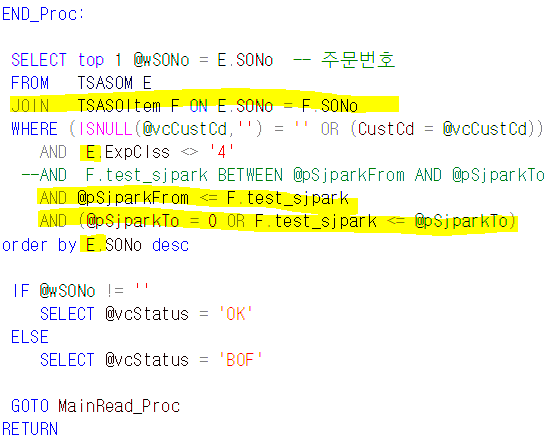
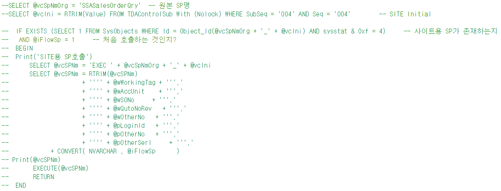
\~~_@@ => _@@ 있으면 표준이 아니다
ex. SSASalesOrderQry => 표준
ex. SSASalesOrderQry_ => 테스트용
이 부분이 있으면 주석처리 해야한다
의미 : 표준을 실행하다가 테스트용(_@@)을 만나면 표준 실행을 중지하고 테스트를 실행
but.
테스트용 실행 시
테스트용 실행 => 주석 부분 만남 => 표준으로 알고 종료 후 다시 테스트용을 실행
=> 다시 주석 부분 만남
===> 무한 루프
===========================================================================